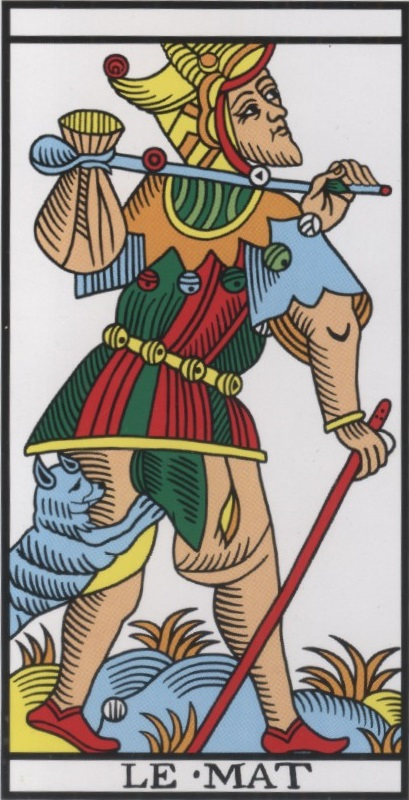

Bienvenidx
Bienvenidx a nuestra escuela de Tarot, un espacio de encuentro, aprendizaje e introspección. Exploramos el lenguaje simbólico de los arcanos y sus posibilidades para el autoconocimiento.
Realizamos diferentes actividades en torno al tarot. La principal es el curso introductorio El Camino de los 22 Arcanos, una propuesta de exploración personal a través de los arcanos mayores.
También nos encontramos online para compartir dinámicas introspectivas relacionadas con el Tarot, y organizamos talleres tratando aspectos más avanzados.

El Tarot
El tarot tiene sus raíces en los juegos de cartas que se difundieron por Europa durante el siglo XV. Con el paso de los siglos, las imágenes de sus cartas fueron adquiriendo nuevos significados simbólicos y se incorporaron a distintas tradiciones de interpretación y reflexión. Hoy, el tarot puede abordarse desde múltiples perspectivas: histórica, artística, simbólica y espiritual.
Entendemos el tarot desde una perspectiva humanista y evolutiva. Para nosotrxs, sus imágenes y símbolos son una invitación a observar nuestra experiencia, reconocer patrones, explorar preguntas y abrir nuevas posibilidades de comprensión. No se trata de fijar un destino inamovible, sino de favorecer una relación más consciente con nuestra historia, nuestras decisiones y nuestro potencial de cambio.
Nuestra visión
Entendemos el tarot desde una perspectiva humanista y evolutiva. Para nosotrxs, sus imágenes y símbolos son una invitación a observar nuestra experiencia, reconocer patrones, explorar preguntas y abrir nuevas posibilidades de comprensión. No se trata de fijar un destino, sino de favorecer una relación más consciente con nuestra historia, nuestras decisiones y nuestro potencial de cambio.
A través del diálogo con los arcanos, buscamos acompañar procesos de reflexión y crecimiento personal, respetando la libertad, la singularidad y el recorrido de cada persona.
Contacto
¿Quieres conocer nuestra escuela, participar en alguna actividad o saber más sobre El Camino de los 22 Arcanos? Puedes ponerte en contacto con nosotras escribiendo a elcaminodelos22arcanos@gmail.com
Persona 1
[Añadir aquí una presentación de la primera persona: su recorrido, su relación con el tarot, su papel en la escuela y las actividades que facilita.]
Contactar con Persona 1 ↗Persona 2
[Añadir aquí una presentación de la segunda persona: su recorrido, sus intereses, su visión del tarot y su contribución al proyecto.]
Contactar con Persona 2 ↗